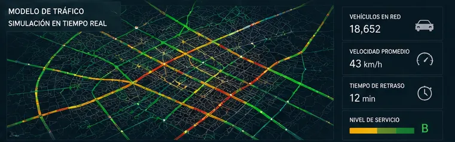
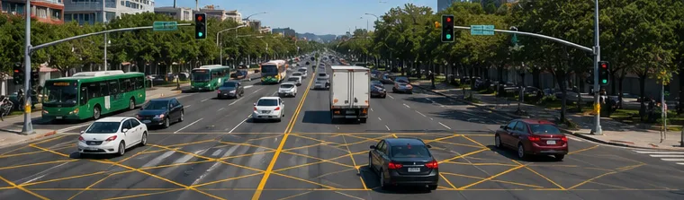
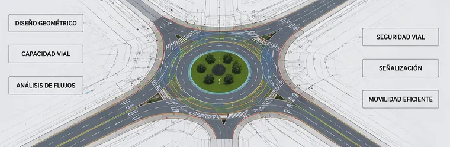

VIALIDADES Y
TRANSPORTE
Modelos geoespaciales y de tráfico para mejorar la circulación, reducir tiempos y optimizar redes viales.
Ingeniería de transporte e infraestructura vial para la conectividad estratégica
La eficiencia económica de las regiones y la calidad de vida en las urbes están directamente vinculadas a la fluidez de sus redes de transporte y a la resiliencia de su infraestructura vial.
En BIG-i desarrollamos estudios de ingeniería de tránsito, transporte masivo y logística de distribución de alta especialización. Fusionamos el análisis territorial y la modelación predictiva de flujos para optimizar la movilidad vial, diseñar corredores de transporte eficientes, mitigar la congestión urbana y garantizar la conectividad segura y sostenible de personas y mercancías.
Planificación multimodal, simulación de tráfico y auditorías de infraestructura
A través del uso de herramientas tecnológicas avanzadas, modelos analíticos de demanda y Sistemas de Información Geográfica —SIG—, transformamos la infraestructura vial con soluciones técnicas de precisión.
Estudios de Tránsito e Ingeniería de Vías
Planificación, aforo vehicular y análisis macro y micro de flujos de tránsito, matrices origen-destino y niveles de servicio para optimizar la geometría y capacidad de vialidades urbanas, autopistas y carreteras.
Dictámenes de Impacto Vial y Mitigación Urbana
Evaluación analítica del impacto generado por desarrollos inmobiliarios, comerciales, industriales o de infraestructura sobre la red vial circundante, proponiendo soluciones geométricas y de control efectivas.
Modelación y Planificación de Sistemas de Transporte
Estudios de factibilidad, origen-destino y asignación de demanda para estructurar redes de transporte público masivo, rutas de personal institucional y sistemas de transporte de carga de gran escala.
Auditorías de Seguridad Vial y Trazado Geométrico
Identificación espacial de puntos negros de siniestralidad —hotspots viales— y propuestas técnicas de rediseño de intersecciones, golas, incorporaciones y señalética para garantizar una circulación segura.
Soluciones Integrales
Nuestros servicios en ingeniería vial, ordenamiento de tránsito y transporte están diseñados para responder a las demandas operativas, logísticas y normativas de los actores clave del sector.
Secretarías de Obras Públicas, Comunicaciones y Transportes
Planes de Movilidad y Transporte —PIMUS—, reingeniería de sentidos de circulación, optimización de redes de semáforos y diseño de corredores de flujo continuo.
Empresas Constructoras y Firmas de Ingeniería Civil
Provisión de estudios ejecutivos de tránsito, análisis de capacidad vial, estudios de derechos de vía y planos de señalización necesarios para la validación y entrega de obras.
Concesionarias de Autopistas y Peajes
Monitoreo espacio-temporal de flujos vehiculares, análisis de demanda para proyección de tarifas, auditorías de seguridad vial en carretera y diseño de planes de contingencia viales.
Operadores de Transporte Masivo y Logística de Carga
Modelos de ruteo óptimo basados en la geometría vial, restricciones de tráfico pesado, horarios de circulación, flujos de congestión urbana y optimización de terminales.
Desarrolladores Inmobiliarios, Comerciales e Industriales
Elaboración de estudios de impacto vial indispensables para la obtención de licencias de construcción, accesos viales integrados y diseño de estacionamientos de alta eficiencia.
Centros de Monitoreo Urbano y Control de Tráfico —C2, C4 y C5—
Arquitectura e integración de datos vehiculares en tiempo real para la optimización de los centros de control de tráfico, gestión de semáforos inteligentes y atención inmediata de incidentes.
Evidencia Visual
Proyectos, diagnósticos y levantamientos territoriales.



¿Interesado en este estudio?
Optimizamos la red vial de tu ciudad o corredor logístico.